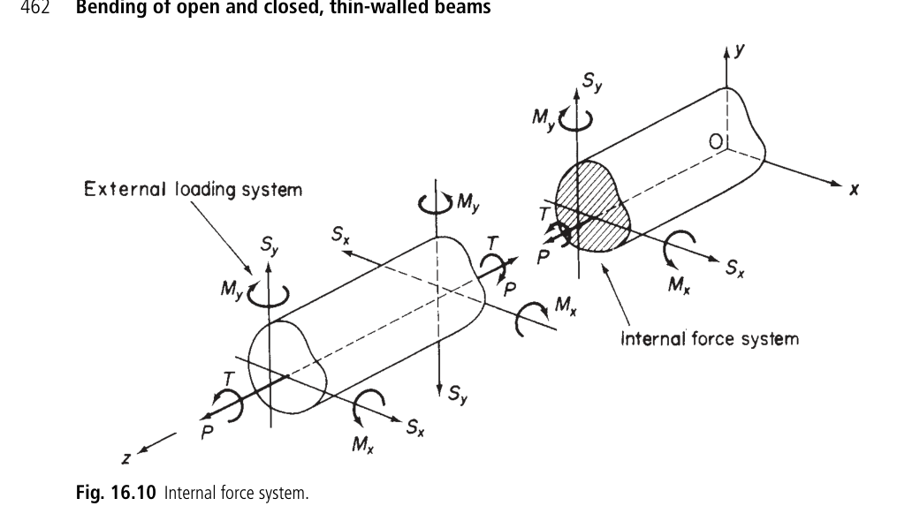

Structures Wingbox Documentation#
This module contains the tools to describe a wingbox and to perform the necessary analyses on them.
- class tuduam.structures.wingbox.Boom[source]#
Bases:
objectA class to represent an idealized boom.
Note
All of the parameters are optional as in this library the attributes have been allocated dynamically. But if this class is used you could also simply load them when instantiating them.
- Parameters:
- bidint, optional
Boom ID.
- Aint, optional
Boom area.
- xfloat, optional
Boom x position.
- yfloat, optional
Boom y position.
- sigmafloat, optional
The direct stress the boom experiences.
- Attributes:
- bidint or None
Boom ID.
- Afloat or None
Boom area.
- xfloat or None
Boom x position.
- yfloat or None
Boom y position.
- sigmafloat or None
The direct stress the boom experiences.
- get_cell_idx(wingbox_struct: Wingbox, chord: float) int[source]#
Returns the cell index of where the panel is located for the specified wingbox structure.
- Parameters:
- wingbox_structWingbox
The wingbox data structure containing the locations of the spars.
- chordfloat
The local chord of the wing section.
- Returns:
- int
The cell index of where the panel is located.
- class tuduam.structures.wingbox.IdealPanel[source]#
Bases:
objectA class representing a panel in an idealized wingbox.
- Parameters:
- Attributes:
- pidint or None
Panel ID.
- bid1int or None
The boom ID of its corresponding first boom.
- bid2int or None
The boom ID of its corresponding second boom.
- b1Boom or None
Instance of one of the two
Boomconnecting the panels.- b2Boom or None
Instance of the other
Boomconnecting the panels.- t_pnlfloat or None
Panel thickness.
- q_basicfloat or None
Basic shear flow.
- q_totfloat or None
Total shear flow.
- taufloat or None
Shear stress.
- dir_vecfloat or None
Direction vector.
- get_cell_idx(wingbox_struct: Wingbox, chord: float) int[source]#
Returns the cell index of where the panel is located.
- Parameters:
- wingbox_structWingbox
The wingbox data structure containing the locations of the spars.
- chordfloat
The local chord of the wing section.
- Returns:
- int
The cell index of where the panel is located.
- length() float[source]#
Length of the panel based on the coordinates of the boom. Boom center is used as the assumption is that the booms are infinitesimally small.
- Returns:
- float
The length of the panel.
- class tuduam.structures.wingbox.IdealWingbox(wingbox: Wingbox, chord: float)[source]#
Bases:
objectA class representing an idealized wingbox, containing methods to perform computations on that instance and some accessed methods. It is strongly advised not to use this class without the
discretize_airfoil()function, as all functions rely on theWingboxto be properly loaded with geometry.Assumptions
The x datum of the coordinate system should be attached to the leading edge of the wingbox.
Some methods, such as read_cell_area, expect the first and last cells to begin and end on a vertex.
- Parameters:
- wingboxWingbox
The wingbox structure.
- chordfloat
The chord length of the wingbox.
- Attributes:
- wingbox_structWingbox
The wingbox structure.
- area_strfloat
The area of the stringer.
- chordfloat
The chord length of the wingbox.
- x_centroidfloat or None
The x-coordinate of the centroid, datum attached to leading edge.
- y_centroidfloat or None
The y-coordinate of the centroid.
- panel_dictdict
Dictionary containing panel information.
- boom_dictdict
Dictionary containing boom information.
- area_lstlist or None
List of cell areas.
- centroid_lstlist or None
List of cell centroids.
- Ixxfloat or None
Moment of inertia about the x-axis.
- Ixyfloat or None
Product of inertia.
- Iyyfloat or None
Moment of inertia about the y-axis.
- _compute_area_z_str(t_st, w_st, h_st) float[source]#
Computes the area of a Z-stringer.
- Parameters:
- t_stfloat
The thickness of the stringer.
- w_stfloat
The width of the stringer.
- h_stfloat
The height of the stringer.
- Returns:
- float
The computed area of the Z-stringer.
- _compute_boom_areas(chord) None[source]#
Function that creates all boom areas. The program assumes a fully functional panel and boom dictionary where all values have the full classes assigned. This function can be used manually by the user, but it is generally advised to use the discretize_airfoil function to create a wingbox.
Assumptions
The idealization only takes into account a force in the vertical direction (that is, tip-deflection path).
- Parameters:
- chordfloat
The chord length of the wingbox.
- Returns:
- None
Returns none as the boom areas are directly assigned to the
Boominstances.
- property _read_skin_panels_per_cell: List[int]#
Returns a list with the number of panels on the skin per cell, ignoring the panels which are part of one of the spars. This function requires a fully filled out boom and panel dictionary.
- Returns:
- list
An n x m 2D list where n is the number of cells and m is the number of panels (might not be identical for each cell).
- _set_Ixx()[source]#
Computes the moment of inertia about the x-axis.
- Returns:
- float
The moment of inertia about the x-axis.
- _set_Iyy()[source]#
Computes the moment of inertia about the y-axis.
- Returns:
- float
The moment of inertia about the y-axis.
- compute_direct_stress(boom: Boom, moment_x: float, moment_y: float)[source]#
Compute the direct stress at a given boom due to bending moments.
- Parameters:
- boomBoom
The boom at which to compute the direct stress.
- moment_xfloat
The bending moment around the x-axis.
- moment_yfloat
The bending moment around the y-axis.
- Returns:
- float
The direct stress at the given boom.
- get_cell_areas(validate=False) List[float][source]#
Compute the area of each cell using the shapely.geometry.Polygon class.
- Parameters:
- validatebool, optional
When True, shows validation plots, defaults to False.
- Returns:
- List[float]
A list of areas for each cell.
- get_polygon_cells(validate=False) List[Polygon][source]#
Compute the area of each cell with the help of the shapely.geometry.Polygon class. The function expects a fully loaded airfoil to be in the class using the idealized_airfoil function. Erroneous results or an error will be given in case this is not the case! When using this function for the first time with a new airfoil, it is advised to run it once with validate=True to see if the resulting areas are trustworthy. This will show you n plots of the cell polygon where n is the number of cells.
Assumptions
Function is built for an object built with the discretize airfoil, that is cell 0 has a singular point as a leading edge, that is one point is the furthest ahead. The same goes for cell n but with the trailing edge.
- Parameters:
- validatebool, optional
When True will show the 3 plots described above, defaults to False.
- Returns:
- List[Polygon]
A list of n cells long where each element contains a (shapely) Polygon instance representing the corresponding cell.
- get_total_area() float[source]#
Returns the total area of all the booms, including the addition of the skin thicknesses. This function is used for the optimization of a wingbox.
- Returns:
- float
The total area of all the booms combined.
- load_new_gauge(t_sk_cell: list, t_sp: float, t_st: float, w_st: float, h_st: float) None[source]#
This function allows you to change the thickness and hence your boom areas of the wingbox whilst maintaining the shape. This is useful for any optimization as you do not have to call the entire discretize function.
- Parameters:
- t_sk_celllist
List of skin thicknesses for each cell.
- t_spfloat
Thickness of the spar.
- t_stfloat
Thickness of the stringer.
- w_stfloat
Width of the stringer.
- h_stfloat
Height of the stringer.
- plot_direct_stresses() None[source]#
Plots the direct stresses in the booms of the wingbox.
This function creates a scatter plot of the direct stresses in the booms, with the color indicating the magnitude of the stress.
- Returns:
- None
- plot_geometry() None[source]#
Plots the geometry of the wingbox, showing the discretized panels and booms.
This function creates a scatter plot of the geometry of the wingbox, with hover text showing the boom ID and area.
- Returns:
- None
- plot_quiver_shear_stress(scale=0.02, arrow_scale=0.4) None[source]#
Plots the shear stress directions in the panels of the wingbox using a quiver plot.
- Parameters:
- scalefloat, optional
Scaling factor for the arrow length, defaults to 0.020.
- arrow_scalefloat, optional
Scaling factor for the arrow size, defaults to 0.4.
- Returns:
- None
- plot_shear_stress() None[source]#
Plots the shear stress in the panels of the wingbox.
This function creates a scatter plot of the shear stress in the panels, with the color indicating the magnitude of the stress.
- Returns:
- None
- stress_analysis(shear_y: float, shear_x: float, moment_y: float, moment_x: float, shear_y_appl: float, shear_mod: float, validate=False) Tuple[list, list][source]#
Perform stress analysis on a wingbox section based on the internal shear loads and moments. All data is stored within the
IdealPanelandBoomclasses.Sign convention forces and coordinate system
The sign convention above is applied for the forces. Please consider that Figure 16.9 shows positive directions and senses for the above loads and moments applied externally to a beam and also the positive directions of the components of displacement u, v, and w of any point in the beam cross-section parallel to the x, y, and z axes, respectively. If we refer internal forces and moments to that face of a section which is seen when viewed in the direction zO then, as shown in Fig. 16.10, positive internal forces and moments are in the same direction and sense as the externally applied loads whereas on the opposite face they form an opposing system. A further condition defining the signs of the bending moments Mx and My is that they are positive when they induce tension in the positive xy quadrant of the beam cross-section. Finally, the beam seen in Figure 16.10 is also immediately the coordinate system used. Where the aircraft flies in the x direction, thus analyzing the right wing structure.
Assumptoins
The effect of taper is not included, see 21.2 (See Megson). TODO: future implementation
Lift acts through the shear centre (no torque is created). TODO: future implementation
Stresses due to drag are not considered.
Sources
[1] Section 16.2.2, T.H.G Megson, Aircraft Structures For Engineering Students, 4th Edition
- Parameters:
- shear_yfloat
The internal shear force in the y-direction.
- shear_xfloat
The internal shear force in the x-direction.
- moment_yfloat
The internal moment around the y-axis.
- moment_xfloat
The internal moment around the x-axis.
- shear_y_appl: float
The location where they y force is applied
- shear_modfloat
The shear modulus.
- validatebool, optional
If True, validate the results, defaults to False.
- Returns:
- Tuple[list, list]
A tuple containing the results of the stress analysis.
{kind=link}
- tuduam.structures.wingbox.discretize_airfoil(path_coord: str, chord: float, wingbox_struct: Wingbox) IdealWingbox[source]#
Create a discretized airfoil according to the principles of Megson based on a path to a txt file containing the non-dimensional coordinates of the airfoil, the corresponding chord, and the wingbox data structure fully filled in.
Assumptions
Airfoil is idealized according to Megson ch. 20.
Each stringer will form one boom in the discretized airfoil.
Only an equal amount of stringers can be specified per cell; if that is not the case, a warning is issued (due to the method of discretization).
The ratio of \(\frac{\sigma_1}{\sigma_2}\) required for the skin contribution to the boom size based on the skin is determined by the ratio of their y position, thus \(\frac{y_1}{y_2}\).
General Procedure
Create a spline of the top and bottom airfoil.
Create an array along which to sample this spline to create the booms, creating specific samples for the spar positions.
Move over the top surface, creating booms and panels as we go.
Do the same for the bottom surface, moving in a circular motion.
Move over all the spars and create booms and panels as we go.
Iterate over all booms and add skin contribution and stringer contribution to all their areas.
Future improvement
Add contribution of spar caps (for now, this has been left out as I did not see the value of it at the time).
- Parameters:
- path_coordstr
Path to the file containing the non-dimensional coordinates of the airfoil.
- chordfloat
Chord length of the airfoil.
- wingbox_structWingbox
The wingbox data structure fully filled in.
- Returns:
- IdealWingbox
The discretized idealized wingbox.
- tuduam.structures.wingbox.get_centroids(path_coord: str) Tuple[float, float][source]#
Compute the nondimensional x and y centroid based on the coordinate file of an airfoil. The centroids are computed assuming the following:
Assumptions
1. It is only based on the skin, i.e., the spar webs and stringers are ignored. Additionally, the different thickness of the skin are not taken into account. The implication being that the x centroid should be at x/c = 0.5, unless there was a bias in the sampling points.
Future improvment
1. Take into account the spar webs for a better x centroid. However, this is irrelevant for now as we only take into account forces in the vertical direction.
- Parameters:
- path_coordstr
Path to the geometry file using the Selig format.
- Returns:
- Tuple[float, float]
The nondimensional x and y centroid of the airfoil.
- tuduam.structures.wingbox.read_coord(path_coord: str) ndarray[source]#
Returns an m x 2 array of the airfoil coordinates based on a Selig formatted .dat file.
- Parameters:
- path_coordstr
Path to the Selig formatted .dat file containing the airfoil coordinates.
- Returns:
- np.ndarray
An m x 2 array with the airfoil coordinates where x goes from the top trailing edge to the top leading edge and then back to the lower trailing edge, maintaining the Selig format.
- tuduam.structures.wingbox.spline_airfoil_coord(path_coord: str, chord: float) Tuple[CubicSpline, CubicSpline][source]#
Returns two functions which interpolate the coordinates of the given airfoil. The first function interpolates the top skin, and the second function interpolates the bottom skin. The resulting interpolation functions take into account an airfoil scaled by the given chord.
- Parameters:
- path_coordstr
Path to the airfoil coordinates using the Selig format.
- Returns:
- Tuple[CubicSpline, CubicSpline]
A cubic spline of the top skin and lower skin, respectively.